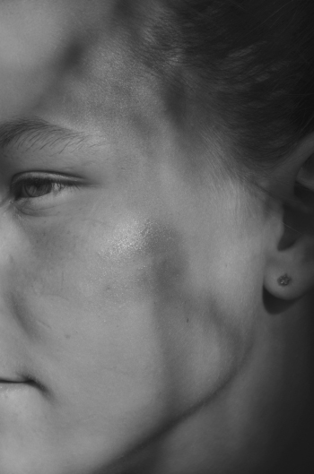
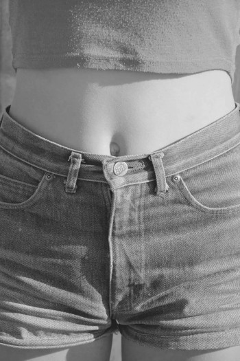
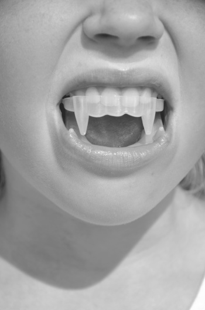

Публикации и мои новости

“For some reason, as a society we sanctify “youth”.
You may say that this project for me is an attempt
to do the same. Each one of my heroines is for me,
a goddess each one of their gestures is sanctified.

For me, these photos are not about eroticism for
eroticism’s sake, or even about eroticism at all.
Rather “Girls” is about being able to catch and
reexamine that transient, waifish, liminal moment
between “almost childhood” and “almost adulthood’
that I have already passed in my own life.

These themes are very present in my previous work
as well, the conflict between “power” and “weakness”
“sensuality” and “aggression”. All this converged in
the images of my “Girls” who are always full of
contradictions. The beauty and the essence of
“waifishness” or “girlhood” for me,
is in its transience…”